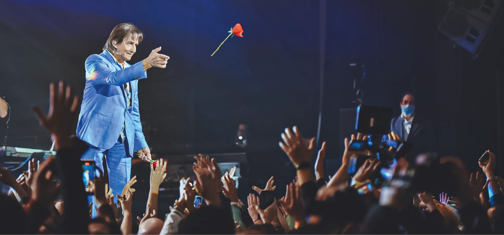
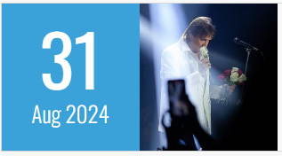
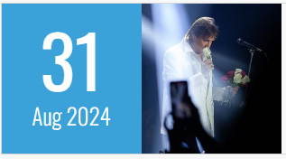
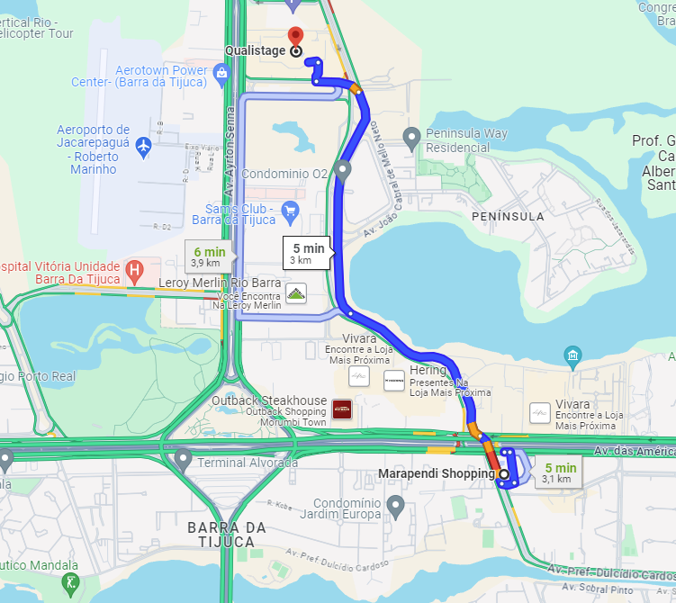

ROBERTO CARLOS - SHOW NO RIO DE JANEIRO
 

Agenda - RIO DE JANEIRO / RJ
Horário: 21:00
Local: Av. Ayrton Senna, 3000 - Barra da Tijuca, Rio de Janeiro - RJ, 22775-003, Brasil - Qualistage
Valor: R$2000.00
Clique aqui para comprar o ingresso
A melhor forma de chegar ao evento é percorrendo o trajeto de moto, e levará 05 minutos, conforme imagem:

Confira também a localização através do mapa: